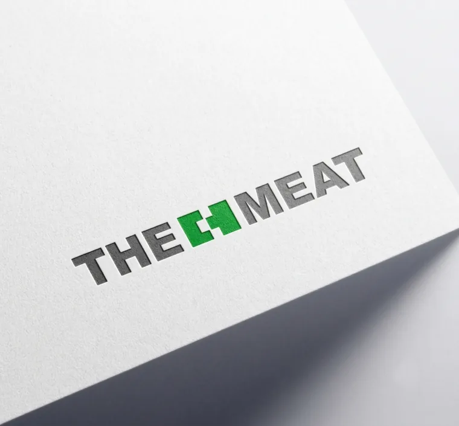
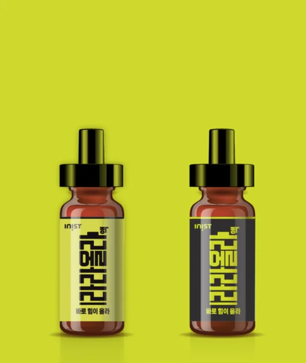

식음료 · F&B
Blue OCEAN Robata & Sushi Bar · 매장 간판
로바타 스시 전문점의 상호를 매장 외벽 간판으로 제작해 적용했습니다.
1999년부터 지금까지 쌓아온 업종별 로고 제작·CI·BI 사례입니다. 카페와 제조업의 고민은 다르고, 병의원과 공공기관이 지켜야 할 톤도 다릅니다. 아래 필터로 우리 업종과 가장 가까운 사례부터 확인해보세요.
아래는 로고뱅크가 실제로 진행한 업종별 로고·CI·BI 작업 사례입니다. 업종을 필터로 선택하면 관련 사례만 모아볼 수 있습니다.
전체 20개 사례
로바타 스시 전문점의 상호를 매장 외벽 간판으로 제작해 적용했습니다.

"자연의 이로움을 담았습니다"를 카피로 담은 조미료 2종 패키지 디자인입니다.

폰케이스 제품에 적용한 TACTISM 워드마크 디자인입니다.

"Advanced Driving Technologies" 메시지를 담은 옥외 광고탑 디자인입니다.

병원 로비 안내 데스크에 적용한 사이니지 디자인입니다.

어학원 내부 공간에 적용한 브랜드 사이니지 디자인입니다.

자연과학대학 건물에 적용한 SCIENCE 안내 사인 디자인입니다.

매장 유니폼 앞치마에 적용한 진미성찬 로고 디자인입니다.

침구 매장 외관과 어닝에 적용한 THE SESA 브랜드 디자인입니다.

제품 형태를 구체화하는 초기 디자인 스케치 과정입니다.

건물 외벽에 입체 형태로 제작해 설치한 STEAMBOY 사인입니다.

사옥 외벽에 적용한 INIST 브랜드 사인 디자인입니다.

"공존의 혁신미래교육"을 담은 엠블럼과 직인 디자인입니다.

미술관 공간에 적용한 사이니지 배너 디자인입니다.

정육 브랜드 THE MEAT의 로고 디자인 인쇄 적용 예시입니다.

기초화장품 라인 4종에 적용한 KICHO 용기 디자인입니다.

실내 공간에 입체 형태로 제작해 설치한 BIGFOOT SOUND 사인입니다.

흑백 양면으로 제작한 DAESUNG 명함 디자인입니다.

"아름다운 계곡 만들기" 캠페인을 위한 로고 디자인입니다.

흑염소 진액 제품 2종에 적용한 패키지 디자인입니다.
업종보다 중요한 건, 지금 브랜드가 어디서 막혀 있는지입니다.
우리 업종도 가능한지 물어보기 →지금 쓰는 로고 파일 하나면 됩니다. 문제점부터 파악하고, 방향을 함께 잡아드립니다.
무료 브랜드 진단 받기 →